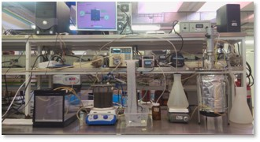
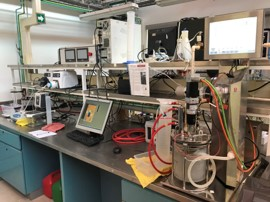
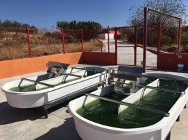
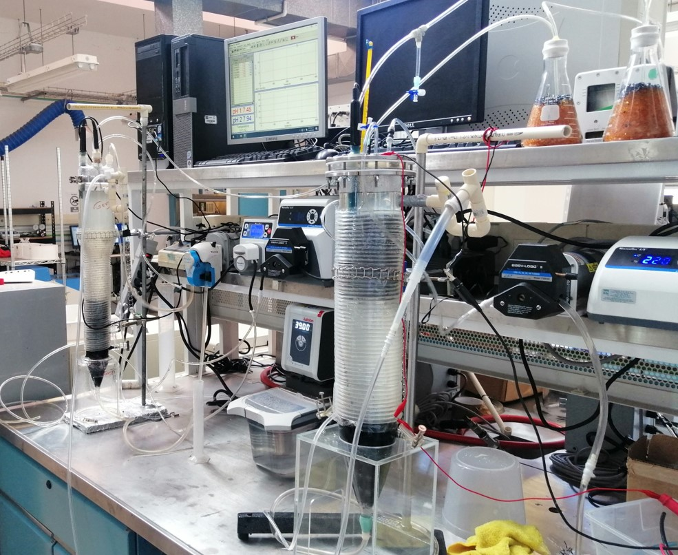
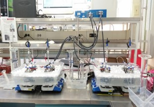
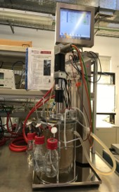
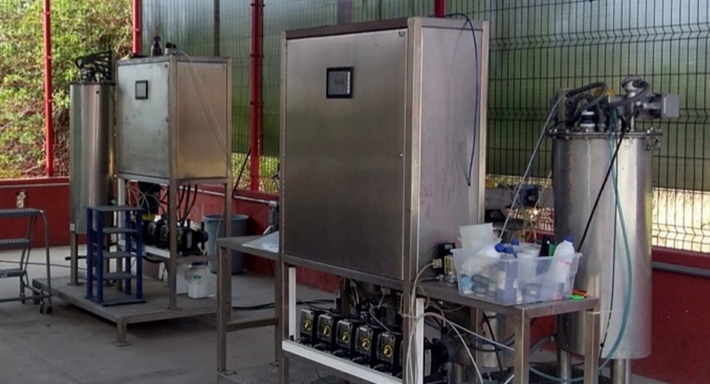
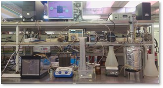
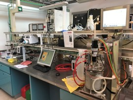
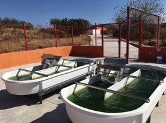
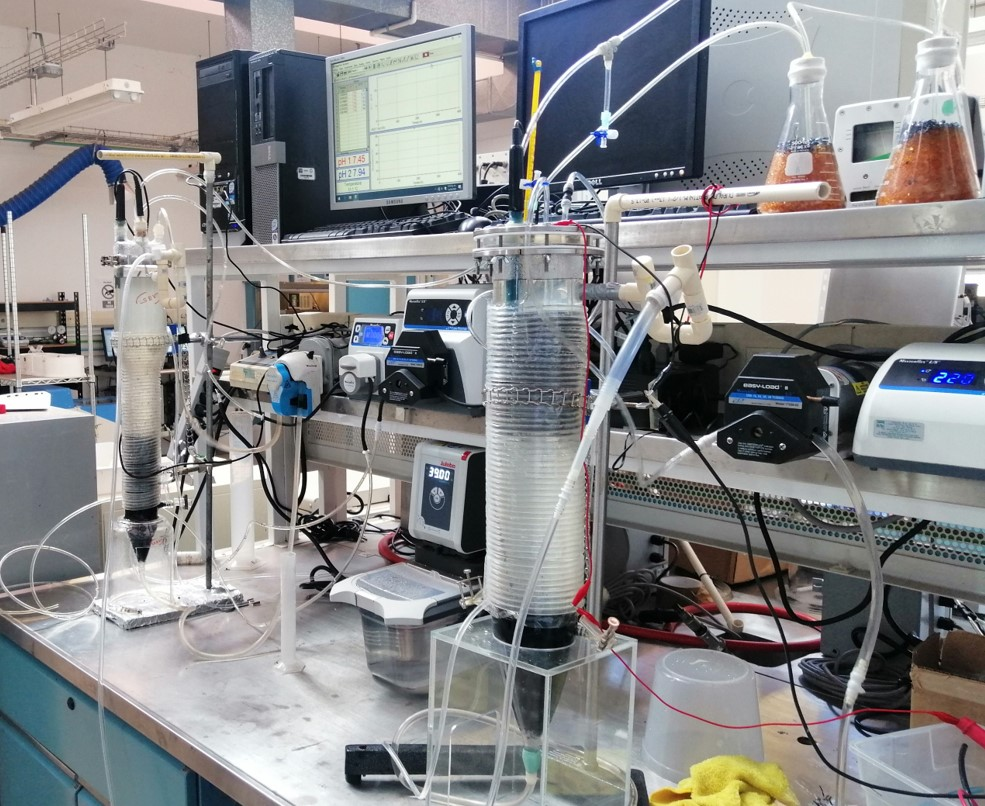
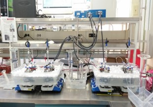
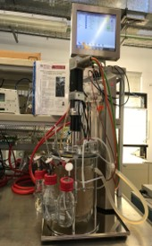
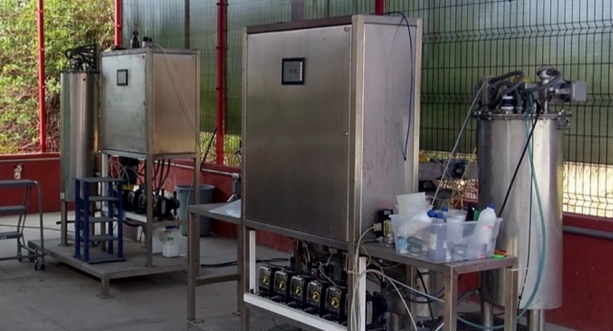
Por: Grupos Interdisciplinarios de Investigación
Nombre del proyecto:
Cambio de paradigma: Residuos como materia prima para conciliar el eje agua- energía-ambiente-seguridad alimentaria.
Eje Temático Estratégico de Investigación:
Nexo Agua-Energía-Medio Ambiente-Seguridad Alimentaria.
Líder de proyecto:
Dr. Iván Moreno Andrade, Investigador Titular B, Instituto de Ingeniería, UNAM.
Resumen
Los problemas ambientales globales como la emisión de gases de efecto invernadero, la disminución de combustibles fósiles, el consumo excesivo de recursos y la generación excesiva de residuos requieren del desarrollo e implementación de estrategias que permitan mitigarlos de manera sustentable. Esto impacta en el eje Agua-Energía-Ambiente-Seguridad Alimentaria, donde los residuos orgánicos, considerados originalmente como un problema ambiental, podrían tener un papel importante al considerar futuras soluciones a dichos problemas sin comprometer la disponibilidad de alimentos en futuras generaciones. Una solución atractiva, consiste en aprovechar los residuos orgánicos como materia prima en procesos que permitan su conversión en energía renovable (biocombustibles líquidos y gaseosos), productos de valor agregado y productos químicos (precursores de bioplásticos, ácidos orgánicos, biofertilizantes, etc.), los cuales podrían ser potencialmente utilizados en el sector industrial, transporte, residencial y agropecuario.
Tomando en cuenta lo anterior, la integración de grupos interdisciplinarios de investigación (GII) potenciaría la experiencia de académicos de la Universidad Nacional Autónoma de México (UNAM) para proponer procesos eficientes que empleen residuos como materia prima para su valorización y a la vez proponer soluciones integradoras que concilien el eje Agua-Energía-Ambiente-Seguridad Alimentaria. En este sentido, el presente proyecto se centra en la propuesta y evaluación de distintos procesos para la valorización de residuos y su integración desde el punto de vista de la economía circular. El proyecto está organizado en paquetes de trabajo técnicos asociados al análisis de residuos con potencial de producción de recursos de valor agregado, el tratamiento y reúso de agua y residuos, la generación de energéticos (biocombustibles, electricidad), productos químicos y biofertilizantes, y el uso de energías renovables en procesos para la valorización de residuos. Así mismo, se plantean paquetes de trabajo integrativos que recopilarán datos técnicos y los emplearán para proponer
soluciones integradas como sistemas de producción energéticamente sustentables, el desarrollo de procesos con un control automático, entendimiento de la microbiología de los bioprocesos y el análisis de ciclo de vida para dar soluciones holísticas al uso de residuos como materia prima. Finalmente, se incluye un paquete integrativo de vinculación y difusión de los resultados obtenidos, con el fin de aportar al acceso universal al conocimiento, la difusión y la posible transferencia tecnológica que pudiera resultar del proyecto. Cabe mencionar que en el proyecto interactúan 30 académicos de distintas instituciones de la UNAM, buscando soluciones multidisciplinarias, potencializando las capacidades de trabajo al interior del GII. Al término del proyecto planteado se contará con un grupo que ha fortalecido y demostrado una colaboración sólida entre los participantes, reflejándose en la publicación de artículos y el desarrollo de procesos novedosos para la valorización de residuos.
Dr. Iván Moreno Andrade
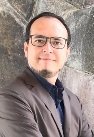Semblanza
Es Biólogo egresado de la Facultad de Ciencias Biológicas y Agropecuarias de la Universidad Veracruzana, realizó su maestría y doctorado en Ciencias Biológicas en la UNAM, obteniendo el título en 2006. De 2007 a 2008 realizó una estancia posdoctoral en la carrera de Ingeniería Civil y Ambiental. Departamento de la Universidad de California en Berkeley.
Actualmente es Investigador de tiempo completo en el Laboratorio de Investigación en Procesos Avanzados de Tratamiento de Agua (LIPATA) de la Unidad Académica del Instituto de Ingeniería de Juriquilla, Querétaro.
Es Nivel 2 del Sistema Nacional de Investigación. Tiene más de 70 artículos publicados en revistas arbitradas.
Proyecto GII
Cambio de paradigma: Los residuos como materia prima para conciliar el eje agua-energía-medio ambiente-seguridad alimentaria (Eje estratégico de investigación: Nexo Agua-Energía-Medio Ambiente-Seguridad Alimentaria).
Credenciales
• Postdoctorado, Universidad de California-Berkeley
• Doctorado en Ciencias Biológicas, Universidad Nacional Autónoma de México.
• Maestría en Ciencias Biológicas, Universidad Nacional Autónoma de México.
• Licenciatura en Biología, Universidad Veracruzana.
Contacto
E-mail: IMorenoA@iingen.unam.mx
Tel. +52 442 1926171
Galería
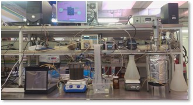
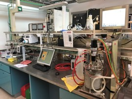
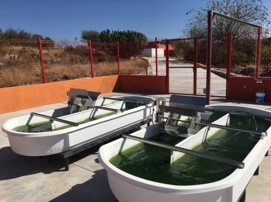
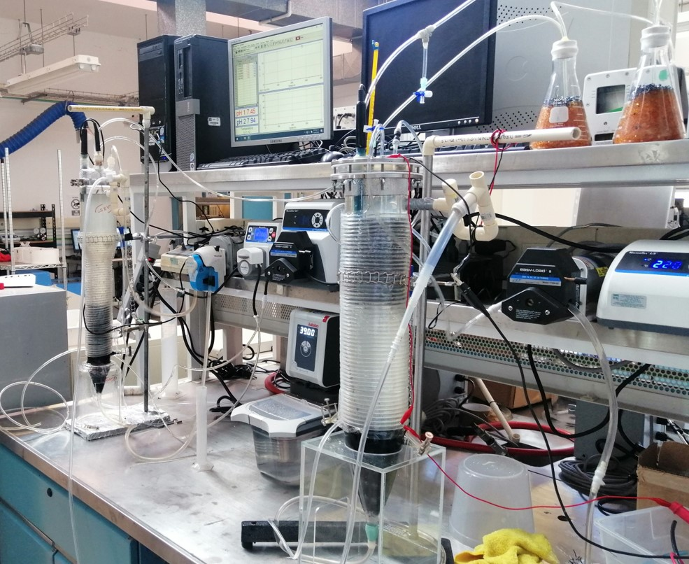
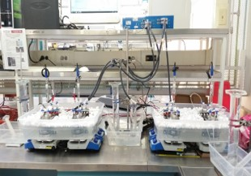
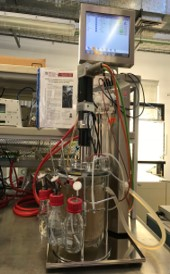
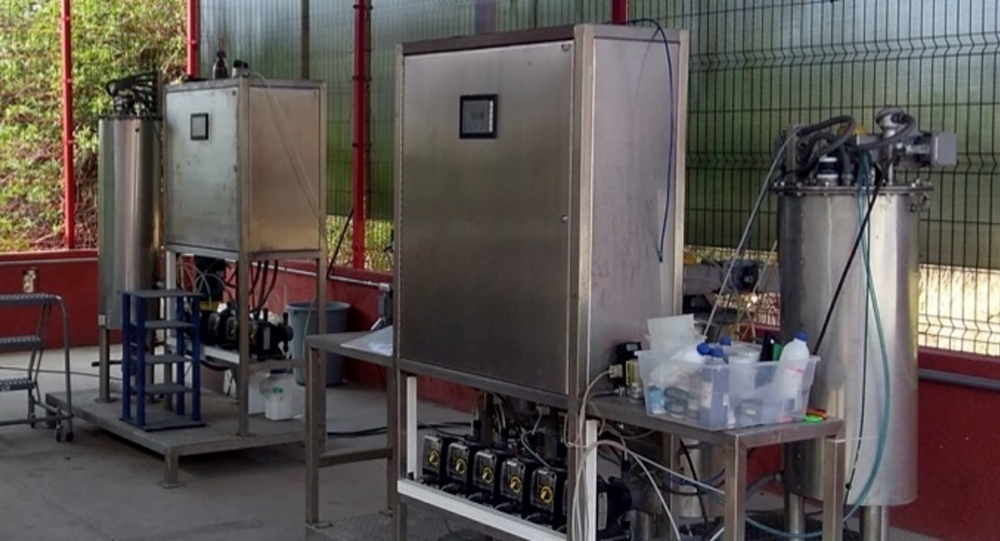
Colaboradores (IIUNAM)
Coordinación Ingeniería Ambiental: L. Patricia Güereca Hernández, Juan Manuel Morgan Sagastume
Coordinación Eléctrica y Computación: Jaime A. Moreno Pérez
Coordinación Mecánica y Energía: Roberto Giovanni Ramírez Chavarría
Unidad Académica Sisal: Bernardo Figueroa Espinoza
Unidad Académica Juriquilla: Germán Buitrón Méndez, Francisco J. Cervantes Carrillo, Idania Valdez Vazquez, Guillermo Quijano Govantes, Alejandro Vargas Casillas, Julián Carrillo Reyes, Miguel Á. Vital Jácome, Karla M. Muñoz Páez, Gloria Moreno Rodríguez, Jaime Pérez Trevilla, Ángel Hernández Huerta
Colaboradores (IER, UNAM)
Dulce María Arias Lizárraga.
Camilo Alberto Arancibia Bulnes.
Anabel López Ortiz.
Patrick Okoye Ugochukwu.
Hugo Olvera Vargas.
Heidi Isabel Villafán Vidales.
Patricio Javier Valadés Pelayo.
José de Jesús Quiñones Aguilar.
Karla Graciela Cedano Villavicencio.
Colaboradores (Fac. de Química, UNAM)
Herminia de Jesús Loza Tavera
Martín Pedro Vargas Suárez
Colaboradores (ICML, UNAM):
Martín F. Soto Jiménez
Instituciones académicas participantes
Instituto de Ingeniería UNAM. »